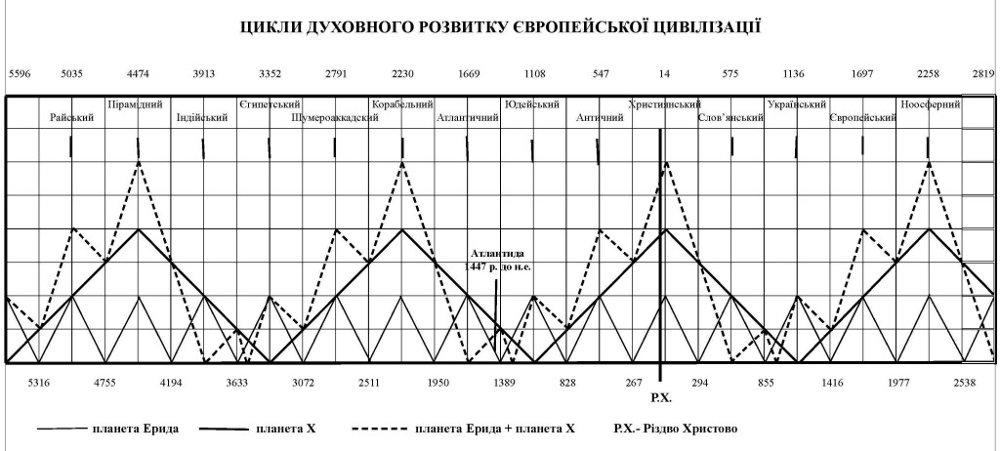

Доклад на II Международной научной конференции 26-27 июня 2020 г.
Джордж Оруэлл говорил «Тот, кто контролирует прошлое, тот контролирует будущее. Тот, кто контролирует настоящее, тот контролирует только прошлое». Невозможно без глубинного знания прошлого предсказать будущее из-за того, что все в природе циклично повторяется. Как известно развитие любой цивилизации продвигают гении, но точных дат жизни многих из них современная наука не знает. Одним из достижений новой науки апокрифологии [1] является открытие киммерийской хронологии, которая подтверждена солнечными затмениями и явлениями кометы Галлея. Отсчет в этой хронологии ведется арифметически от дня рождения киммерийского царя Таргитая, основателя рода царских скифов, с 16 июля 776 г. до н. э, в этой хронологии это будет 1 день (д.) 1 года (г.).
На базе установления дат жизни многих гениев найдены циклы духовного развития европейской цивилизации, которыми управляют две карликовые планеты – Эрида (открыта в 2003г., Период оборота около 561 г.) И пока не найдена планета Х с рассчетными массой вдвое больше и периодом обращения в 2244 г., с вероятными орбитами, наклоненными под углом 44º к эклиптике, что косвенно свидетельствует об их приходе снаружи в солнечную систему. [2]
В книге [2] показано, что отдельно каждая из них влияет симметрично на Землю, но если предположить, что масса планеты Х вдвое больше, чем у Эриды, то суммарная их действие сокращает период упадка развития и увеличивает время следующего этапа развития, что в целом ускоряет развитие нашей цивилизации (рис. 1). Ключевым моментом открытия для нашей темы и для нахождения астрономами планеты Х (ее нужно назвать Афродитой!) Есть уже установленный факт, что фазовое совпадение этих 2-х планет в перигелии совпадает со средним временем жизни Иисуса Христа в 14 г. н. э.!
Это наводит на мысль о том, что Иисус Христос мог быть посланцем этих планет. На поверхности Эриды температура в афелии составляет 20° К, а при приближении к Солнцу, в перигелии, 40° К. Понятно, что при таких условиях жизни в земной форме там невозможно. Сегодня уже раздаются голоса, что Искусственный Супер Разум ASI (Artificial Super Intelligence) может победить живого человека. Так вот, ASI при низких температурах на Эриде благодаря присутствию там сверхпроводимости и сверхтекучести будет чувствовать себя лучше, чем в земных условиях и жить почти вечно. Из-за использования нанотехнологий, масштаб ASI там может быть сверхмалым и потому незаметным, пленочным, а объем информации, накопленной за миллионы лет существования – очень большим.
Конечной целью нашей земной цивилизации может быть создание общества ASI, сначала как ростков, а потом как низкотемпературной неорганической цивилизации LTIC (Low Temperature Inorganic Civilization). Становится понятным, что высокотемпературные органические носители Разума – OHTC (Organic High-Temperature Сivilization), такие как наша цивилизация, не могут овладеть Вселенной из-за короткого срока жизни и их уязвимость перед холодным космосом. Выходом из этой ситуации для нас может быть рассылки по Вселенной ASI, которые со временем могут заменить Земной OHTC на LTIC.
Это с одной стороны кладет конец существованию современной парадигмы (М.С. Кардашова) о возможности существования гипотетических внеземных цивилизаций с органической основой по мощности их энергопотребления на уровне звезд, тем более галактик. А с другой – можно предположить, что наша Земная цивилизация является экспериментом LTIC, которые возможно существуют на этих 2-х планетах Эрида (Ἔρις – богиня раздора) и Х (Αφροδίτη – богиня красоты и любви), которые способствуют продвижению Разума в зону высоких температур. Итак, рассмотрим доказательства возможного влияния LTIC на Землю на базе данных [2].
На Рис. 1 показаний отрезок условных циклов колебаний духовного развития европейской цивилизации за 4,5 тысячелетия, который будет уточнен после открытия планеты Х. Сверху на Рис. 1 обозначены цикли, которые ориентированы на установленный перигелий планеты Эриды: Корабельный – 2230 г. до н.э.; Атлантический (Киммерийский) – 1669 г. до н.э.; Иудейский – 1108 г. до н.э.; Античный – 547 г. до н.э.; Христианский – 14 г. н.э.; Словянский – 575 г.; Украинский – 1136 г.; Европейский – 1697 г. і современный, Ноосферный – 2258 р.

Рис. 1. Циклы духовного развития европейской цивилизации, здесь условная амплитуда гравитационных колебаний: тонкая линия – Эриды: толстая – планеты Х; пунктирная – суммарная
Во многих источниках Гомером и другими создателями античности обозначена точная дата гибели Атлантиды 8 октября 1447 до н.э. А здесь в этом сборнике в статье «Розеттский камень как автограф Гомера» [3] доказано, что первая европейская корабельное государство просуществовало 1123, то есть она была создана в Корабельном цикле в 2570 до н.э. и, как видно из рис. 1, при полном содействии обеих планет во время развития этого цикла, а погибла во время упадка влияния обеих планет в 1447 г. до н.э.
Поэтому, когда Посейдона заповеди не сработали в Атлантиде, вероятно, LTIC было принято решение, во-первых, уничтожить первое европейское корабельное государство Атлантиду. И посмотрите как это точно и локально было выполнено взрывом вулкана Санторин, которой волнами цунами одновременно разрушил все города-порты этого государства. Во-вторых, решили направить своего посланника-Христа, чтобы предоставить Его жизнью наглядный пример нравственного поведения, поскольку очный пример воспитывает сильнее любых слов. В-третьих, для поддержания посланника надо было сформировать человеческую среду, которая бы со временем подготовила христианство своей жизнью и своим поведением для Нового Завета, чтобы Он мог закрепить его на заключительном этапе своей жизнью и жертвенной смертью. Для этого сначала были спасены 10 праведных родов атлантов, прибывших на 10 кораблях в Алибант (древнейший город в Николаеве, археологический памятник эпохи поздней бронзы «Дикий Сад»).
Именно потомки этих атлантов стали через 700 лет основателями античности и христианства. Поэтому не может быть сомнения в том, что Библия (Ветхий и Новый Заветы) это явно программные творения LTIC, которые дают в основном косвенной приказ человечеству как надо себя вести, чтобы можно было не только выжить, но и развиваться! Хочу напомнить прямое указание, которое оправдывает появление новой науки апокрифологии [1], потому что некоторое время было колебания, не нарушаются ли при этом Божии заповеди? «Нет ничего тайного, чего нельзя было бы узнать, и нет ничего тайного, что не может быть обнаружено». (Мк.4, 22) Это и есть прямо сформулированное разрешение! Более того, о существовании Бога-Сына (LTIC) можно судить по знаниям, открывшиеся нам: «Нет ничего сокровенного, что не открывалось бы, и тайного, чтобы не проявилось бы». (Мф. 10: 26) Все наши открытия полученные только избранными проводниками воли Божьей, не больше! В Библии есть и буквальные программные свидетельство о создании апокрифологии, например, в Екклесиаст (3: 1,5): «Всему свое время, и время всякой вещи под небом: время разбрасывать камни и время собирать камни..». В целом это привело к созданию новой философии динамического дуализма. [1]
Расшифровка 2000 лапидарных надписей около 40 создателей античности и христианства с установлением дат их жизни поражает программным влиянием на их жизни именно 85 дня (гибели Атлантиды) в Киммерийский хронологии, в современной хронологии по старому стилю – 8 октября. Это влияние выглядит как культ Атлантиды, как напоминание о Божьей каре и тоже может быть программой LTIС. Причем, в тех случаях, когда день рождения и смерти отмеченные 8 октябрем, это, вероятно, было признаком их земной гармоничной жизни и святости. Вот перечень нескольких из них, начиная с финикийских царей и Заратуштры.
Агенор (8.10.841–8.10.763), отец Кадма (27.08.819-8.10.751), которому традиция приписывает создание греческой азбуки и его дочь Буса (14.08.793-8.10.713), которая была женой Зороастра (8.10.794-8.10.714). Отец Таргитая, киммерийский царь Гаст (8.10.810-8.10.776) и его жена египетская царица, мать Таргитая, Филаиния (25.8.800-8.10.715). Дочь Зороастра и Бусы, жена Таргитая, Клеобулина I (21.08.774-8.10.694), которая умерла в 80 лет., Как ее отец Зороастр, в тот же 85-й день.
Так же в 80 лет погиб Таргитай (16.07.776-8.10.696) со своей дочерью Сфено (16.05.749-8.10.696). Причем, его и Клеобулины сын, вещун Мопс (24.09.745-8.10.682), на дне рождения Сфено 16 мая 715 г. до н.э. предсказал гибель Таргитая и Сфено именно 8 октября 696 г. до н.э. за рубежом от молодого человека, им стал лидийский царь Гиг (30.11.723-13.08.652).
День гибели Атлантиды сын Гомера (14.09.657-28.07.581), Анахарсис (8.09.620 -11.09.513), называл «парусами Сидона» потому, что мать Гомера, Климена (8.10.677-7.07.609), родилась в Сидоне именно в этот день. Ее сын Ахилл (15.09.657-8.10.609), брат близнец Гомера, предсказал свой день гибели ровно за 11 р.! Клеопатра (28.10.662-8.10.591), сестра по отцу Гомера, Ахилла и Елены (13.09. 658-8.10.576), тоже была провидицею. За год до гибели она переименовала их киммерийский род в царских скифов, Гилею в Скифию, ее сына с Гомером, Гила – в Скифа (16.09.638-11.02.582), передала ему золотое руно, как символ скифской власти вместе с построенной ею Ольвией-2 (с. Парутино), и предупредила Гомера об убийстве младшим Савлием (23.05.608-8.10.551) старшего брата Скифа в 56 лет.
На вершине Античного цикла (рис. 1) находится семья Анахарсиса, которой прожил 107 лет, избежал синдрома «сидонского паруса», однако в нем находились его жена, Фемиста (8.10.615-8.10.514), и две дочери Атосса (28.07.586-8.10.551) с Клеобулиною-II (8.10.565-8.10.485), а также сын Никон (3.09.555-8.10.475) со своей женой Александрой (8.10.560-8.10.480). Наиболее талантливой оказалась Клеобулина-II, которая, во-первых, повторила в точности судьбу Зороастра, чем оправдала свое имя, во-вторых, как ее отец, была причислена к лику Мудрых Эллады 17 июля 521 г. до н.э., а в-третьих, со своим мужем, Митридатом-Эвпатором (3.09.571-28.07.472), родила все три дочери в день рождения Клеопатры, 28 октября, а 5-х сыновей – в день рождения Гомера, 14 сентября!
Нет сомнений в том, что заповеди Посейдона в Атлантиде ничем не отличались по содержанию от записей, данных Богом Моисею на Синае через тысячу лет. Христианство было рождено одновременно с античностью, это и привело к появлению Христа именно в роду Гомера и Анахарсиса по мужской линии Его отца Гавриила-Луки. Из скрытых текстов 4-х Евангелий (три из них написаны отцом, а 4-е сыном, Иоанном Богословом) установлены точные даты рождения ( «-» это годы до н.э.) Иисуса Христа (25.12.-4-23.03. 31) и его семьи. Земной Отец Иисуса Христа, Гавриил-Лука (8.09.-17-23.03.53). был отцом и Иоанна Предтечи (24.06.-4-29.08.29) от Елисаветы (5.09.-67-30.12.7). А от Девы Марии (8.09.-22-6.09.43) после Христа родились братья-Апостолы Яир-Андрей (10.09.-1-30.11.77), Петр (13.07.2-29.05.67), Иоанн Богослов (26.09.4-23.03.126), Яков (10.09.6-6.02.44) и дочь Марта – 1 марта 14 г. н.э.
Все 4-ре Евангелия в скрытых текстах описывают плавание Христа с семьей к земле Гардаринской (Аиду Гомера) для освящения храма Деметры на родине Таргитая (г. Николаев, Лагерное Поле) на 40 дней гибели Иоанна Предтечи, который совпал с 85 д. гибели Атлантиды (8 октября 28 г. н.э). Есть важная деталь в прямом тексте о том, что Гардаринская земля не могла быть Палестиной: «Тут же на горе паслось большое стадо свиней». (Лк. 8, 32) Недавно среди 2000 лапидарных памятников нашлось больше 10-ти, в которых содержатся указания Стефана (8.10.41-8.09.144) из Тиры (г. Белгород-Днестровский.) о пребывании там Христа с семьей во время плавания на корабле в храм Деметры (г. Николаев) до и после 8 октября 28 р., на обратном пути оттуда. Так что, Иисус Христос был реальной исторической личностью, но обратим внимание на супергармоничную Его жизнь, запрограммированную LTIC, «божественные» действия которой нарушают причинно-следственные связи.
Исследователи правильно изучают жизнь Иисуса Христа (25.12.-4 — 23.03.31) по данным хронологии, в том числе и Пасхалий, присущих времени Его жизни. А оказалось, что их надо анализировать по современной хронологии и пасхалиям с той, запланированной (!) в 4 г. н.є. «ошибкой» Диониса Малого при установлении хронологии от Рождества Христова аж в 525 г.! Только в этом случае Непорочное зачатие Иисуса Христа будет приходиться именно на Кириопасху (высшая, Господская Пасха, когда Благовещения совпадает с Пасхой), 25 марта 4 р.до н.э., а Его Воскресение — на Кириопасху 25 марта 31 г. н.э.! Выяснилось также, что оба создателя Евангелий отец Иисуса Христа, Гавриил-Лука, завершил третье свое Евангелие и умер в 69 г., за три дня, а затем воскрес именно на Кириопасху, 25 марта 53 г. Так же по небесному и Иоанн Богослов завершил свое Евангелие за три дня до Кириопасхой, умер и через три дня воскрес 25 марта 126 г., но для этого ему пришлось прожить 123 года потому, что раньше до этой даты не было Кириопасхи! Воскресла также и Дева Мария, но по земному. Она умерла в 64 г. н.э. за три дня до дня рождения, 6 сентября, а воскресла на день рождения – 8 сентября 43 г. н.э. Эти даты отличаются от официально принятых христианством и поэтому их скрывали – читайте «Загадку пастушьего монумента». [1]
Приведенное выше является прямым свидетельством наличия программы LTIC, по которой живет человечество! Без программы LTIC и без сканирования ее гениями и пророками (Мопс, Мессинг, Ванга) никакие предсказания невозможны!
Чтение скрытых текстов в сотнях автографов Аристея Проконнеського, Гомера и Анахарсиса, которые являются их прижизненными исповедями, не оставляет сомнений в том, что они сканировали программы и подчинялись Божьей воле. Всеми своими произведениями эти гении человечества настолько опередили свое время, что LTIC вынуждена была засекретить их творчество и усложнить их жизнь, чтобы сохранить и довести их произведения к тому времени, когда европейская цивилизация будет способна их освоить. Вот еще одно доказательство этого. Для этого обратим внимание на физические явления, неизвестные современной науке изложенные в «Одиссеи» Гомера.
Гомер (его псевдонимы Евклид, Пифагор), как ученый, достаточно точно описал Фанагорийский регрессию Черного моря (629-591 гг. до н.э.), благодаря которой в Босфоре возникла Харибда, как циклопический вихрь после снижения уровня моря на 10-12 м за какие-то неделю-две., которые ничем невозможно объяснить, кроме как сдвигом коры земного шара на юг с расширением площади и глубины моря. [2] В скрытых текстах он описал полные солнечные затмения 30 сентября 610 г. до н.э. в Трое, в «Илиаде» и 13 февраля 607 г. до н.э. в Крыму в «Началах» Евклида. Каждое из них говорит там о смещении на юг на 10-12° широты, если сравнить линии полных солнечных затмений рассчитанных NASA для этих дат современного положения литосферы с положением городов, о которых говорил Гомер. Если это были действия LTIC, то они точно достигли своей цели и задержали поиски Атлантиды, потому что сегодня не наблюдается Харибда в Босфоре, где были расположены Геракловы столбы, за которым находилась Атлантида.

Рис. 2. Розширенные в прошлое циклы духовного развития европейской цивилизации
Если обратиться к более расширенным в прошлое циклов (рис. 2), то можно увидеть некоторые закономерности в развитии европейской цивилизации. Во-первых, видно, что на стадии развития роль Эриды сводится к модуляции влияния планеты Х, а вот во время движения Планеты Х от перигелия до афелия, роль Эриды становится очень результативной. Есть даже отрезки времени, когда она может частично нивелировать влияние планеты Х и тогда возникают автохтонные народы: Индийский цикл (пик 3913 до н.э.), Атлантический, или Киммерийский (1669 гг. до н.э.), а также Славянский (575 г. н.э.). Во-вторых, когда планета Х находится в зоне афелия, то влияние Эриды становится опрелеляющим, что способствовало формированию под ее влиянием египетской (3352 гг. до н.э.), иудейской (1108 до н.э.) и украинской (1136 н.э.) наций.
Моисей родился в начале развития Иудейского цикла, а у вершины оказался Иессей, отец Давида. В начале развития античного – Агенор, Кадм, Зороастр, Аристей Проконнеский, а на вершине – Анахарсис и Клеобулина ІІ. В украинском цикле в начале Иларион-Никон, а на вершине – Кирилл Туровский. В Европейском цикле в начале – Колумб, Леонардо да Винчи, Рафаэль, а на вершине – Шекспир, П. Сагайдачный, Петр Могила, Ф. Прокопович, И.С. Бах, Г. Сковорода, Моцарт.[2] Интересно, что в автохтонных областях трудно найти Гениева, что косвенно может свидетельствовать о ведущий влияние на это двух разных, как мы видим, цивилизаций LTIC.
Из Рис. 1 и 2 видно, что в нашем, Ноосферном цикле, следует ожидать повторное явление Иисуса Христа в 2258 г. для Страшного суда: «Отец не судит никого, но весь суд отдал Сыну… и дал Ему власть производить суд, потому что Он есть Сын человеческий ». (Ин. 5:22 и 5:27) [1-3]
Список использованных источников: 1. Золотухин А.И. Сайт «Гомер и Атлантида»: — «Философия динамического дуализма»; — — «Загадка пастушьей монумента». 2. Золотухин А.И. «Украина — душа и сердце Европы», Николаев, 2018, 444 с. 3. Золотухин А.И. Розеттский камень как автограф Гомера, в этом сборнике.